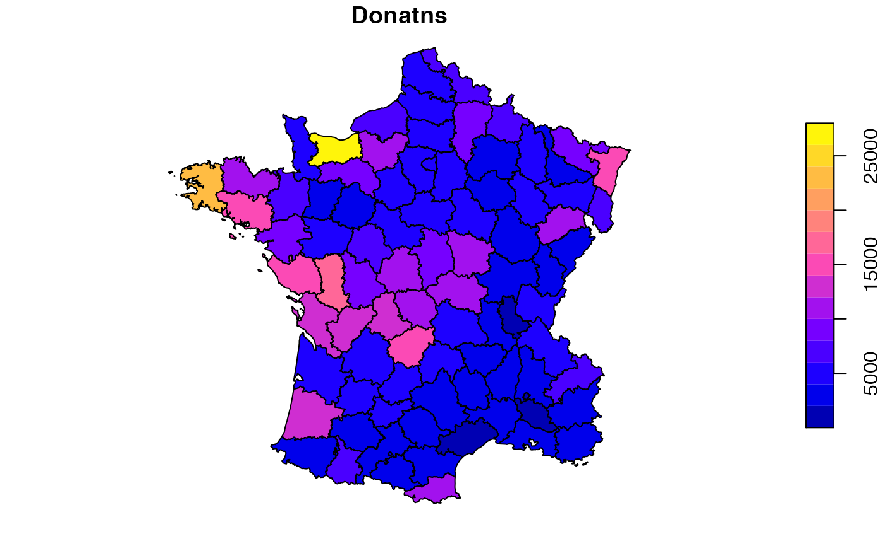

Classic social science foundational study by Andre-Michel Guerry on crime, suicide, literacy and other “moral statistics” in 1830s France. Data from the R package Guerry (Michael Friendly and Stephane Dray).
guerry
An sf data frame with 85 rows, 23 variables, and a geometry column:
Description
Department ID: Standard numbers for the departments
Region of France (‘N’=’North’, ‘S’=’South’, ‘E’=’East’, ‘W’=’West’, ‘C’=’Central’). Corsica is coded as NA.
Department name: Departments are named according to usage in 1830, but without accents. A factor with levels Ain Aisne Allier … Vosges Yonne
Population per Crime against persons.
Population per Crime against property.
Percent of military conscripts who can read and write.
Donations to the poor.
Population per illegitimate birth.
Population per suicide.
Size of principal city (‘1:Sm’, ‘2:Med’, ‘3:Lg’), used as a surrogate for population density. Large refers to the top 10, small to the bottom 10; all the rest are classed Medium.
Per capita tax on personal property. A ranked index based on taxes on personal and movable property per inhabitant.
Commerce and Industry, measured by the rank of the number of patents / population.
Distribution of clergy, measured by the rank of the number of Catholic priests in active service population.
Crimes against parents, measured by the rank of the ratio of crimes against parents to all crimes – Average for the years 1825-1830.
Infanticides per capita. A ranked ratio of number of infanticides to population – Average for the years 1825-1830.
Donations to the clergy. A ranked ratio of the number of bequests and donations inter vivios to population – Average for the years 1815-1824.
Per capita wager on Royal Lottery. Ranked ratio of the proceeds bet on the royal lottery to population — Average for the years 1822-1826.
Military desertion, ratio of number of young soldiers accused of desertion to the force of the military contingent, minus the deficit produced by the insufficiency of available billets – Average of the years 1825-1827.
Instruction. Ranks recorded from Guerry’s map of Instruction. Note: this is inversely related to Literacy.
Number of prostitutes registered in Paris from 1816 to 1834, classified by the department of their birth
Distance to Paris (km). Distance of each department centroid to the centroid of the Seine (Paris).
Area (1000 km^2).
Population in 1831, in 1000s.
MULTIPOLYGON
Angeville, A. (1836). Essai sur la Statistique de la Population française Paris: F. Doufour.
Guerry, A.-M. (1833). Essai sur la statistique morale de la France Paris: Crochard. English translation: Hugh P. Whitt and Victor W. Reinking, Lewiston, N.Y. : Edwin Mellen Press, 2002.
Parent-Duchatelet, A. (1836). De la prostitution dans la ville de Paris, 3rd ed, 1857, p. 32, 36
https://geodacenter.github.io/data-and-lab/Guerry/
Sf object, units in m. EPSG 27572: NTF (Paris) / Lambert zone II.
